The following topics will help you become more familiar in using the AutoComplete control.
When a control is associated with an AutoComplete control, a popup will be displayed, based on the source. This section illustrates various components of the AutoComplete Popup with their properties which can control the appearance and behavior of the components.
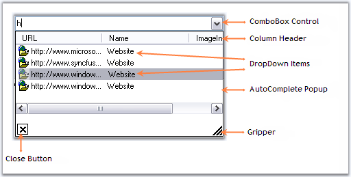
Figure 117: AutoComplete Popup Components
This section will discuss various components in the AutoComplete popup.
3.3.1.1.3.1.1 Header, Close Button and Gripper
Header Settings
DropDown item can have a header which is enabled using AutoComplete.ShowColumnHeader property. AutoAddItem property should be set to true.
|
AutoComplete Properties |
Description |
|
AutoAddItem |
Specifies whether the current item in the target control is to be automatically added during validation, when the ENTER key is pressed. |
 Note: The header will be shown only for the
text that is saved at run time. Set AutoCompleteMode and AutoCompleteSource
properties to None.
Note: The header will be shown only for the
text that is saved at run time. Set AutoCompleteMode and AutoCompleteSource
properties to None.
|
[C#]
this.autoComplete1.AutoAddItem = true; this.autoComplete2.ShowColumnHeader = true; this.autoCompleteDataColumnInfo1.ColumnHeaderText = "Contents"; |
|
[VB.NET]
Me.autoComplete1.AutoAddItem = True Me.autoComplete2.ShowColumnHeader = True Me.autoCompleteDataColumnInfo1.ColumnHeaderText = "Contents" |
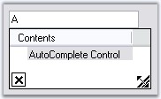
Figure 118: DropDownItem with ColumnHeaderText = "Contents"
Note: You can also set multiple columns.
Refer Multiple Columns to know
more.
Close Button and Gripper Settings
Visibility of close button and the gripper in the popup can be determined by ShowCloseButton and ShowGripper properties.
|
AutoComplete Properties |
Description |
|
ShowCloseButton |
Specifies whether to show the CloseButton at the bottom right of the DropDownContainer. By default it is true. |
|
ShowGripper |
Specifies whether to show gripper at the bottom right of a DropDownContainer. By default it is true. |
Note:
The AutoComplete dropdown can be closed by calling
AutoComplete.CloseDropDown() method.
|
[C#]
this.autoComplete1.ShowCloseButton = true; this.autoComplete1.ShowGripper = true; |
|
[VB.NET]
Me.autoComplete1.ShowCloseButton = True Me.autoComplete1.ShowGripper = True |
3.3.1.1.3.1.2 Behavior Settings
Case Sensitivity
At run time, the string entered in a textbox (for example), can be made case sensitive using the below properties.
|
AutoComplete Properties |
Description |
|
IgnoreCase |
Specifies whether to ignore case sensitivity for string comparison. Default value is true. |
|
CaseSensitive |
Specifies if the replacement of the matching entry is to be case sensitive. |
|
[C#]
this.autoComplete1.IgnoreCase = false; this.autoComplete1.CaseSensitive = true; |
|
[VB.NET]
Me.autoComplete1.IgnoreCase = False Me.autoComplete1.CaseSensitive = True |
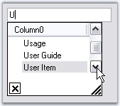
Figure 119: CaseSensitive = "True"
Overriding Combo
The Combobox drop down can be suppressed and overridden by the AutoComplete control using OverrideCombo property.
|
[C#]
this.autoComplete1.OverrideCombo = true; |
|
[VB.NET]
Me.autoComplete1.OverrideCombo = True |
Sorting
The items in the list can be sorted automatically by setting AutoSortList to true.
|
AutoComplete Properties |
Description |
|
AutoSortList |
Specifies whether default sorting is to be performed. |
|
[C#]
this.autoComplete1.AutoSortList = true; |
|
[VB.NET]
Me.autoComplete1.AutoSortList = True |
See Also
Source for AutoComplete Control, External Datasource
The properties which can control the height and width of the AutoCompletePopup are as follows.
|
AutoComplete Properties |
Description |
|
AdjustHeightToItemCount |
Specifies if the height of the drop down should be adjusted automatically, based on the number of items. |
|
AutoPersistentDropDownSize |
The Dropdown size of Autocomplete control is automatically persistent when this property is set to true. |
|
PreferredHeight |
Specifies preferred height for the drop down displayed by the AutoComplete control when AdjustHeightToItemCount property is false. Default value is 200. |
|
PreferredWidth |
Specifies preferred width for the drop down displayed by the AutoComplete control when AdjustHeightToItemCount property is false. Default value is -1. |
|
[C#]
this.autoComplete1.AdjustHeightToItemCount = false; this.autoComplete1.AutoPersistentDropDownSize = true; this.autoComplete1.PreferredHeight = 100; this.autoComplete1.PreferredWidth = 300; |
|
[VB.NET]
Me.autoComplete1.AdjustHeightToItemCount = False Me.autoComplete1.AutoPersistentDropDownSize = True Me.autoComplete1.PreferredHeight = 100 Me.autoComplete1.PreferredWidth = 300 |
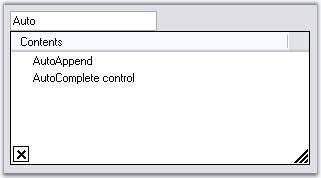
Figure 120: PreferredHeight = "100"; PreferredWidth = "300"
This section will discuss the data settings for the AutoComplete control, in the below topics.
The data for the autocompletion will be maintained by the AutoComplete control itself. This is referred to as a History Data List mode. The below properties deals with data settings.
|
AutoComplete Properties |
Description |
|
CategoryName |
Specifies a unique or shared name that can be given to an AutoComplete control so that it can persist the values under that name. For example, if the CategoryName "URL" is provided for an AutoComplete control on a particular form, all values persisted by that AutoComplete control will also be accessible to other AutoComplete controls on others forms or on the same form with the CategoryName "URL". |
|
DataSource |
Sets the Datasource to the Autocomplete control. The AutoComplete control automatically picks the "History Data List" mode or "Data source" mode based on the values set for the DataSource property. If the datasource property is set to NULL (default value is NULL), the control defaults to History Data List mode. It is to be remembered that the properties CategoryName, AutoAddItem and AutoSerialize have to be set appropriately for the History Data List mode to work properly. |
|
[C#]
this.autoComplete1.CategoryName = "FTP"; this.autoComplete1.DataSource = DataTable1; |
|
[VB.NET]
Me.autoComplete1.CategoryName = "FTP" Me.autoComplete1.DataSource = DataTable1 |
Note: We can set External datasource for the
autocompletion. See External DataSource topic.
See Also
How to delete the items in the list at run time?
3.3.1.1.3.2.2 Source for AutoComplete Control
Dynamic Source at RunTime
Enabling the AutoComplete.AutoAddItem property will allow the end users to save their entries at run time. Pressing Enter key will save the user entry. See Through Designer topic for details.
Setting AutoCompletion Source Through Designer
The different sources available for auto completion are specified using Control.AutoCompleteSource property. When the end user enters a letter in the TextBox for example, the letter will be matched with the source available and displays the dropdown item accordingly.
|
Property |
Description |
|
AutoCompleteSource |
Auto completion source for the control. The different sources are,
FileSystem - Files system as source, HistoryList - Includes all the URLs in the history list, RecentlyUsedList - Includes the list of most recently used URLs, AllUrl - Equivalent source of HistoryList and RecentlyUsedList as the source, AllSystemSources - Equivalent source of AllUrls and FileSystem as the source (Default value of AutoCompleteSource when AutoCompletMode is set to values other than default value), ListItems - Specifies the items in the control, FileSystemDirectories - Specifies directory names alone without file names, CustomSource - Uses the string values entered in AutoCompleteCustomSource property and None - There will not be any source for the auto completion. |
|
[C#]
this.textBox1.AutoCompleteSource = System.Windows.Forms.AutoCompleteSource.HistoryList; |
|
[VB.NET]
Me.textBox1.AutoCompleteSource = System.Windows.Forms.AutoCompleteSource.HistoryList |
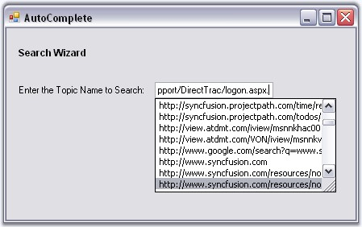
Figure 121: AutoCompleteSource = "HistoryList"
Custom Source
AutoComplete control lets you to specify a set of auto completion text using String Collection Editor. This editor is invoked using Control.AutoCompleteCustomSource property.
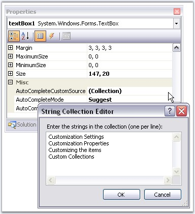
Figure 122: Adding AutoComplete Custom Source Through String Collection Editor
At run time when the user types the first letter, it will automatically display the auto completion list added through this editor.
Note: Control.AutoCompleteSource property
should be set to "CustomSource" for this setting to be effective.
|
[C#]
this.textBox1.AutoCompleteSource = System.Windows.Forms.AutoCompleteSource.CustomSource;
this.textBox1.AutoCompleteCustomSource.AddRange(new string[] {"Customization Settings", "Customization Properties", "Customizing the items", "Custom Collections"}); |
|
[VB.NET]
Me.textBox1.AutoCompleteSource = System.Windows.Forms.AutoCompleteSource.CustomSource
Me.textBox1.AutoCompleteCustomSource.AddRange(New String[] {"Customization Settings", "Customization Properties", "Customizing the items", "Custom Collections"}) |
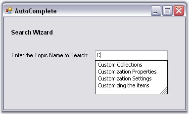
Figure 123: TextBox Associated with AutoCompleteCustomSource
Mode of AutoCompletion
AutoCompletion modes can be specified using AutoCompleteMode property.
|
Property |
Description |
|
AutoCompleteMode |
Gets or sets an option that controls how automatic completion, works for the control.
The available modes are,
None - No autocompletion will be provided for this target edit control, Suggest - The autocompletion will be presented as a list of probable matches in the form of a drop-down window, Append - The closest match will be added to the partial string in the edit control and SuggestAppend - A list of probable matches will be displayed as well as the entry will be completed in the edit control with the closest match. |
|
[C#]
this.textBox1.AutoCompleteMode = System.Windows.Forms.AutoCompleteMode.SuggestAppend; |
|
[VB.NET]
Me.textBox1.AutoCompleteMode = System.Windows.Forms.AutoCompleteMode.SuggestAppend |
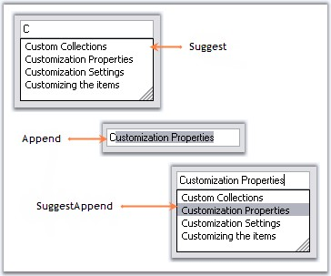
Figure 124: TextBox control with Suggest, Append and SuggestAppend Options
See Also
Multiple Columns, External Datasource
3.3.1.1.3.2.3 External Datasource
You can specify an external datasource for the AutoComplete control to use as the history list. This can be specified through the AutoComplete.DataSource property. The object specified for this property can be any object that implements IList or IListSource.
1. Set AutoComplete mode to AutoSuggest.
2. Set the DataSource in the form's Load event as follows.
|
[C#]
private void Form1_Load(object sender, System.EventArgs e) { // Set up the datasource on the Autocomplete control. this.oleDbDataAdapter1.Fill(this.dataSet11.organisation); this.autoComplete1.DataSource = this.dataSet11.organisation; } |
|
[VB.NET]
Private Sub Form1_Load(ByVal sender As Object, ByVal e As System.EventArgs)
' Set up the datasource on the Autocomplete control . Me.oleDbDataAdapter1.Fill(Me.dataSet11.organisation) Me.autoComplete1.DataSource = Me.dataSet11.organisation End Sub |
3. AutoCompleteItemSelected event is raised when a new item has been selected by the user when the AutoComplete drop down list is displayed. In this event, for the tutorial purpose, the code to display corresponding OrgID of the OrganisationName on the label is included. The below code retrieves the corresponding item from the datasource, for the selected item in the AutoComplete control.
|
[C#]
private void autoComplete1_AutoCompleteItemSelected(object sender,Syncfusion.Windows.Forms.Tools.AutoCompleteItemEventArgs args) { // Displays corresponding OrgID of the OrganisationName on the label. this.label1.Text = args.ItemArray[0].ToString(); } |
|
[VB.NET]
Private Sub autoComplete1_AutoCompleteItemSelected(ByVal sender As Object, ByVal args As Syncfusion.Windows.Forms.Tools.AutoCompleteItemEventArgs)
' Displays corresponding OrgID of the OrganisationName on the label. Me.label1.Text = args.ItemArray(0).ToString() End Sub |
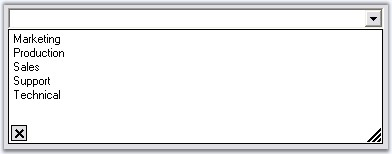
Figure 125: External Data Source set for the AutoComplete Control
Refer to Multiple Columns section for more information on configuring data sources with multiple columns.
The AutoComplete control allows users to display multiple columns of information for each matching entry in the AutoSuggest mode of operation. Columns can be configured through AutoComplete.Columns property.
|
AutoComplete Properties |
Description |
|
Columns |
Specifies the collection of columns in the auto complete dropdown, when AutoCompleteModes enumerator value is AutoSuggest. Each column is represented by an AutoCompleteDataColumnInfo object. This class includes a definition for specifying whether the column is the matching column or the image column. |
|
MatchMode |
Specifies the modes in which the AutoCompleteControl fills the history list for the current text in the current edit control.
The values are,
Manual and Automatic (default). |
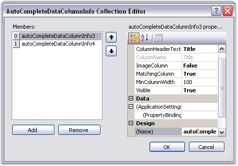
Figure 126: Adding DataColumns to the AutoCompletePopup
|
AutoCompleteDataColumn Properties |
Description |
|
ColumnHeaderText |
Represents the text for the column header. |
|
MatchingColumn |
Column that will be used by the AutoComplete control to perform matching with the current content (at runtime) of the target control. |
|
ImageColumn |
Column which is filled with data that is just the index into the image list that has been assigned to the AutoComplete control. See Image Settings for Details. |
|
MinColumnWidth |
Set minimum width for the column. |
|
Visible |
Shows or hides the column at runtime. |
|
[C#]
this.autoComplete2.Columns.Add(this.autoCompleteDataColumnInfo1); this.autoComplete2.Columns.Add(this.autoCompleteDataColumnInfo2); this.autoComplete2.ShowColumnHeader = true; this.autoComplete2.MatchMode = AutoCompleteMatchModes.Automatic;
this.autoCompleteDataColumnInfo1.ColumnHeaderText = "Title"; this.autoCompleteDataColumnInfo1.MatchingColumn = true; this.autoCompleteDataColumnInfo1.Visible = true; |
|
[VB.NET]
Me.autoComplete2.Columns.Add(Me.autoCompleteDataColumnInfo1) Me.autoComplete2.Columns.Add(Me.autoCompleteDataColumnInfo2) Me.autoComplete2.ShowColumnHeader = True Me.autoComplete2.MatchMode = AutoCompleteMatchModes.Automatic
Me.autoCompleteDataColumnInfo1.ColumnHeaderText = "Title" Me.autoCompleteDataColumnInfo1.MatchingColumn = True Me.autoCompleteDataColumnInfo1.Visible = True |
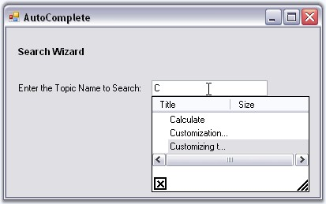
Figure 127: AutoComplete Popup with Multiple Columns
Column can be added matched using external sources also. A sample which demonstrates this feature is available in the below location.
..\My Documents\Syncfusion\EssentialStudio\Version Number\Windows\Tools.Windows\Samples\2.0\Editors Package\AutoCompleteDemo
While using an external datasource, the Columns property can be initially refreshed by clicking on the Refresh Columns verb visible in the designer.
Note: We can also add images to the dropdown
items using internal source and external source. See Image Settings for
details.
See Also
Source for AutoComplete Control, How to match items in all the columns using AutoCompleteControl?
We can add a dropdown item with image to the AutoComplete popup, through the AutoComplete.AddHistoryItem method. An imagelist should be associated with AutoComplete control for this purpose. Specify the item text and the image index in this method.
|
AutoComplete Method |
Description |
|
AddHistoryItem |
Adds item to the internal history of the AutoComplete control. The parameters are,
newItemText - Text for the dropdown item. ImageIndexValue - Index of the image for the particular item. |
|
[C#]
this.autoCompleteDataColumnInfo1.ColumnHeaderText = "Title"; this.autoCompleteDataColumnInfo1.ImageColumn = false; this.autoCompleteDataColumnInfo1.MatchingColumn = true; this.autoCompleteDataColumnInfo1.Visible = true;
this.autoCompleteDataColumnInfo2.ColumnHeaderText = "Size"; this.autoCompleteDataColumnInfo2.ImageColumn = true; this.autoCompleteDataColumnInfo2.MatchingColumn = false; this.autoCompleteDataColumnInfo2.Visible = true;
this.autoComplete1.AddHistoryItem("User Guide", 3); this.autoComplete1.AddHistoryItem("User Item", 2); |
|
[VB.NET]
Me.autoCompleteDataColumnInfo1.ColumnHeaderText = "Title" Me.autoCompleteDataColumnInfo1.ImageColumn = False Me.autoCompleteDataColumnInfo1.MatchingColumn = True Me.autoCompleteDataColumnInfo1.Visible = True
Me.autoCompleteDataColumnInfo2.ColumnHeaderText = "Size" Me.autoCompleteDataColumnInfo2.ImageColumn = True Me.autoCompleteDataColumnInfo2.MatchingColumn = False Me.autoCompleteDataColumnInfo2.Visible = True
Me.autoComplete1.AddHistoryItem("User Guide", 3) Me.autoComplete1.AddHistoryItem("User Item", 2) |
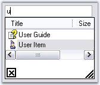
Figure 128: DropDownItem added to AutoComplete Popup using AddHistoryItem Method
Items with Images Through External DataSource
Items with images can be added to the AutoCompletePopup, also using external datasource like XML file. A sample which demonstrates the implementation of external datasource is available in the below location.
..\My Documents\Syncfusion\EssentialStudio\Version Number\Windows\Tools.Windows\Samples\2.0\Editors Package\AutoCompleteDemo
While using an external datasource, the Columns property can be initially refreshed by clicking the Refresh Columns verb, visible in the designer.
See Also
The history list of AutoComplete control can be saved in the following formats.
· Binary Format
· XML Format
· IsolatedStorage medium
· MemoryStream
· PersistState property
The AutoComplete control has a fully built-in serialization feature that provides automatic serialization of the AutoComplete's history list. The serialization mechanism is implemented using the standardized Syncfusion.Windows.Forms.AppStateSerializer component that acts as a central coordinator for all the Essential Tools components and provides the option to read / write to different media such as the default Isolated Storage, XML file, XML stream, Binary file, Binary stream and the Windows Registry.
Persisting AutoComplete's data in default storage
The data of AutoComplete's control can be persisted by setting the AutoSerialize property to true. This information is stored in the Isolated storage.
|
AutoComplete Property |
Description |
|
AutoSerialize |
Specifies whether AutoComplete control can persist its data. |
|
[C#]
this.autoComplete1.AutoSerialize = true; |
|
[VB.NET]
Me.autoComplete1.AutoSerialize = True |
The AutoComplete control has built-in support for serialization that can be enabled or disabled using the AutoSerialize property.
The default serialization option is Isolated storage and the System.IO.IsolatedStorage routines normally store application specific encrypted entries under the 'C:\Documents and Settings\[USER name]\Local Settings\Application Data\IsolatedStorage\’ folder. All of the Essential Tools framework components use the 'Syncfusion.Runtime.Serialization.AppStateSerializer' class in the Shared library for Read/Write. The AppStateSerializer is fully documented and can be initialized for different persistence mediums such as XML / Binary files, XML / Binary streams, and the Win32 Registry using its API.
Persisting in XML file
To save and load the AutoComplete data in a XML,
|
[C#]
using Syncfusion.Runtime.Serialization;
// To Save AppStateSerializer aser = new AppStateSerializer(SerializeMode.XMLFile, @"C:\info.xml"); this.autoComplete1.SaveCurrentState(aser);
// To Load AppStateSerializer aser = new AppStateSerializer(SerializeMode.XMLFile, @"C:\info.xml"); this.autoComplete1.LoadCurrentState(aser); |
|
[VB.NET]
Imports Syncfusion.Runtime.Serialization
' To Save Private aser As AppStateSerializer = New AppStateSerializer(SerializeMode.XMLFile, "C:\info.xml") Me.autoComplete1.SaveCurrentState(aser)
' To Load Private aser As AppStateSerializer = New AppStateSerializer(SerializeMode.XMLFile, "C:\info.xml") Me.autoComplete1.LoadCurrentState(aser) End Sub() |
Persisting in Memory Stream
To serialize the data into a memory stream,
Storing State
|
[C#]
MemoryStream ms = new MemoryStream(); AppStateSerializer aser = new AppStateSerializer(SerializeMode.BinaryFmtStream, ms); this.autoComplete1.SaveCurrentState(aser); aser.PersistNow(); |
|
[VB.NET]
Dim ms As MemoryStream = New MemoryStream() Private aser As AppStateSerializer = New AppStateSerializer(SerializeMode.BinaryFmtStream, ms) Me.autoComplete1.SaveCurrentState(aser) aser.PersistNow() |
Retrieving State
|
[C#]
// Code to retrieve data(stream) from database MemoryStream ms = new MemoryStream(val); ms.Position = 0; AppStateSerializer aser = new AppStateSerializer(SerializeMode.BinaryFmtStream, ms); this.autoComplete1.LoadCurrentState(aser); |
|
[VB.NET]
'Code to retrieve data(stream) from database Dim ms As MemoryStream = New MemoryStream(value) ms.Position = 0 Dim aser As AppStateSerializer = New AppStateSerializer(SerializeMode.BinaryFmtStream, ms) this.autoComplete1.LoadCurrentState(aser); |
To serialize in Binary Format, use the below code.
|
[C#]
// To Save AppStateSerializer aser = new AppStateSerializer(SerializeMode.BinaryFile,"myfile"); this.autoComplete1.SaveCurrentState(aser); aser.PersistNow();
// To Load AppStateSerializer aser = new AppStateSerializer(SerializeMode.BinaryFile,"myfile"); this.autoComplete1.LoadCurrentState(aser); |
|
[VB.NET]
' To Save Private aser As AppStateSerializer = New AppStateSerializer(SerializeMode.BinaryFile, "myfile") Me.autoComplete1.SaveCurrentState(aser) aser.PersistNow()
' To Load Private aser As AppStateSerializer = New AppStateSerializer(SerializeMode.BinaryFile, "myfile") Me.autoComplete1.LoadCurrentState(aser) |
To serialize in Isolated Storage medium, use the below code.
|
[C#]
// To Save AppStateSerializer aser = new AppStateSerializer(SerializeMode.IsolatedStorage, "myfile"); this.autoComplete1.SaveCurrentState(aser); aser.PersistNow();
// To Load AppStateSerializer serializer = new AppStateSerializer(SerializeMode.IsolatedStorage, "myfile"); this.autoComplete1.LoadCurrentState(aser); |
|
[VB.NET]
' To Save Private aser As AppStateSerializer = New AppStateSerializer(SerializeMode.IsolatedStorage, "myfile") Me.autoComplete1.SaveCurrentState(aser) aser.PersistNow()
' To Load Private serializer As AppStateSerializer = New AppStateSerializer(SerializeMode.IsolatedStorage, "myfile") Me.autoComplete1.LoadCurrentState(aser) |
The AutoComplete control displays a filtered suggestion list from a mapped data source in a drop-down as the user types text into the text box. This feature provides support to set the maximum number for the filtered suggestion.
Use Case Scenarios
When you want to narrow down the filtering and get more accurate data, you can use this feature.
Properties
Table 12: Property Table
|
Property |
Description |
Type |
Data Type |
Reference links |
|
MaxNumberofSuggestion |
Set the maximum limit for the suggestion list. |
NA |
Integer. |
NA |
Sample Link
To view a sample:
1. Open Syncfusion Dashboard.
2. Click Windows Forms.
3. Click Run Samples.
4. Navigate to Tools Samples > Editors Package > AutoCompleteDemo.
Maximum Number of Suggestion
You can set the maximum number of suggestions to be displayed in the AutoComplete using the MaxNumberofSuggestion property: The following code illustrates this:
|
[C#] this.autoComplete1.MaxNumberofSuggestion = 5; |
|
[VB] Me.autoComplete1.MaxNumberofSuggestion = 5 |